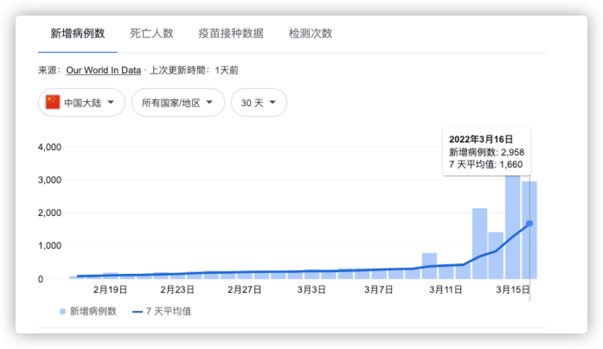
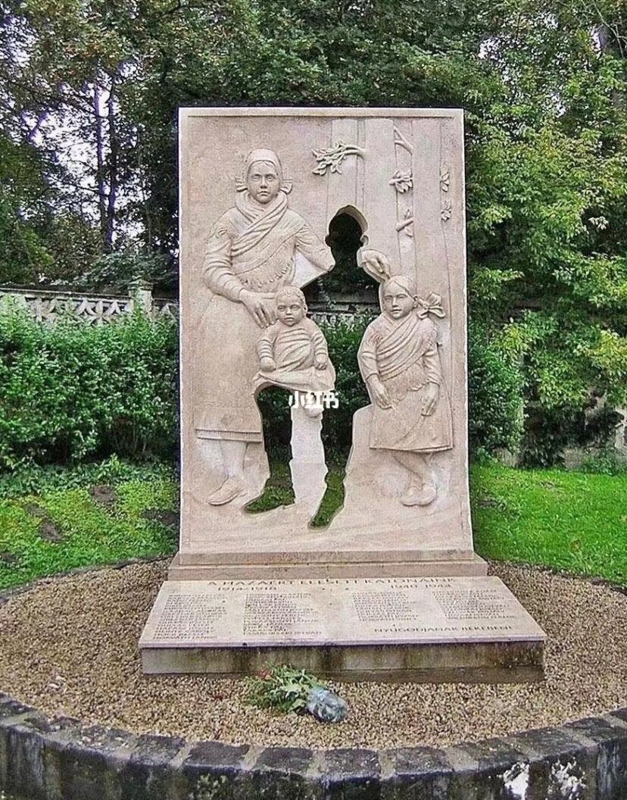

2022 年第一季度总结
这里记录下第一季度自己的一些想法，为了日后翻阅方便！
- 一月
- 程序员的财务独立之路
- 好好自由多彩的生活
- 时光一去不复返
- 开源软件的赚钱方式
- 中国的三大问题
- 二月
- 一生中最大的恐惧
- 极简之「简」
- 信息茧房
- 希望世界和平
- 聊天软件的核心
- 三月
- 战争伤害的总是平民
- 一定要有自己的思考
- 互联网的中立性
- 希望天天都是 3.15
- 全知时代与无知时代
- 最好的一条职业建议
一月
希望新的一年，世界能比去年和平些！
去年一月份的标语也是「希望新的一年，世界能比去年和平些！」，但是明显今年还是不够太平，疫情的再次到来，使原本安逸的生活多了一层阴霾。我也已经有些累的，不想再说这次疫情的孰对孰错了，奈何一股神秘力量驾驭着这一切。希望西安这波疫情早点过去，新年新气象，西安，长安、常安。

一 程序员的财务独立之路
可以试试将 财务独立 作为自己的人生目标！
作者 20 岁时第一次当实习生，发现在 IT 行业，普通人有可能在 30 多岁就实现 财务独立，不再为维持生计和支付日常账单而劳碌。以前，他一直以为每个人都需要工作到退休。从此，他就将财务独立作为自己的人生目标。
- [1] 首要的努力方向，就是追求工资提升
普通人的收入来源，主要还是本职工作，如果工资很低，根本不可能实现财务独立，所以必须想方设法提高工资。一般来说，大厂的高级职位可以拿到稳定的高工资。所以，他要求自己一定要进大厂，并且做到高级工程师。
- [2] 每过三年，就到别处面试
他一般三年换一家公司，这样可以获得显著的加薪和晋升。他说每次换公司，收入至少增加 30%。另外，还可以让自己始终拥有一种进取的心态，不断处于学习和成长的环境之中。不过，换公司是双刃剑，为了获得更高的薪酬，就需要在面试和工作中给别人留下深刻印象，后面的公司对你的要求也会越来越高。
- [3] 建立良好的职业履历
要通过大厂的面试，必须有良好的职业履历。不过，IT 行业跟律师和金融业不一样，就算没有名校经历，只要自身水平过硬，也能求职成功，只是开始时的机会可能会少一些。
- [4] 优先加入增长最快的领域
一个行业增长越快，产生的机会越多，越容易涨工资。在机会面前，你不要害怕改变专业领域。他是硬件工程师出身，进入行业时在英特尔做硬件。后来发现互联网机会更大，他就跳到互联网公司当软件工程师。现在，机器学习很热门，他又去尝试这个领域。
- [5] 投资你的钱
有了积蓄以后，不要让钱在银行闲置，要学会投资。他的很大一部分资产是股票，虽然投资过程中经常遭遇损失，但还是比放在银行增长快得多。
- [6] 节制消费
想要财务独立，一定要控制消费。他认为，钱要花在生活必需品，不要花在奢侈品。钱也不要用于享受，但可以用来增加体验。他说自己始终认为，跟物质享受相比，财务独立才是人生最大的奢侈品。
二 好好自由多彩的生活
疫情结束，好好生活，加油！
在听到摇滚乐的每一个角落，你都是自由的。去到现场，是不会有身份，职业，年龄，地域，性别的界定，你就只是一个来听摇滚乐的人，除此之外，别无其他。你单纯的像一个虔诚的信徒，我想，也许这就是摇滚存在的意义，让你忘却，让你疯狂，而让你苏醒。
我怀念的 2019 啊，终将只能停留在记忆里，不能陪我去到从那以后的任何时候。我把青春另存了，再次相见的时候，我应该不再会那么疯狂，但也请把酒倒满，把我灌醉，让我再次为你们跳一支舞。
三 时光一去不复返
时光一去不复返，往事只能回味。

四 开源软件的赚钱方式
需要慢慢适应软件付费所带来的便利
今天有人在群里看到有人问了一些关于开源软件赚钱的问题，感觉有人说的挺不错的，所以这里记录一下，谈谈自己对于其的理解：
- rickyrick
https://juicefs.com/pricing这种开源产品怎么赚钱啊？提供开源版本自己build，我们组里直接自己build一个，然后一分钱没给
- 伊
- 那期播客有说，他们本身就没烧钱，收支平衡和略赚点儿才开源的，做了好多年了
- 不是上来就开源，以后咋赚钱大概是云服务吧，或者是企业支持那种 - 拍脑袋瞎猜
- S02E01 从商业到开源社区，聊聊 JuiceFS 的开发者招聘_开源面对面
- 老 C
- 好问题。。。这种产品的用户是给那些用云的客户
- 我司
databend也是类似的商业模式，用户都是用商业云，所以基于开源自己搭建的那种不在商业考虑范围里 - 底层逻辑是：一份数据想要在各种云里都有备份的时候，就用这类产品
- 伊
- 挺有意思的，俩创始人都是豆瓣出来的，就好奇豆瓣真的出来了好多人似的
- rickyrick
- 我们老板用
JuiceFS就是为了存算分离 - 不懂，想了几分钟我也不懂怎么赚钱哈哈。技术行的公司直接用它的开源版本，可能偶尔需要企业支持（付费）？技术不行的公司（比如国企？）也不会去想什么存算分离，直接全套外包？
- 我们老板用
- 老 C
- 你不要考虑技术行不行。。。
- 要考虑有多少公司的服务，现在是上云的：
AWS、腾讯云、阿里云等等。。。 - 你还没有捋清楚，一方面是你对
JuiceFS做什么的，还不够清楚。。 - 用户的服务要跑在这各种存储下面，JFS 就帮他们屏蔽了这些差异化
- 用户可以去说，我只管我的服务在
AWS一份，同时在腾讯云一份，然后通过JFS写进去的时候，这个产品自动帮你写两份在这两种云里面，这种用户才是他考虑商业的用户
- rickyrick
- 嗯，这我知道，那开源版本依然是免费的，开源版本也能做这些事
- Wang Ziting
- 最近因为
Docker Desktop收费的事情，对开源商业双版本的软件有了一些新的体会。很多软件比如GitLab、Docker、Ubuntu都有开源版和商业版两个版本，但应该把哪些功能做在商业版里呢？我现在是觉得要让开源版做「酷的功能」，吸引用户和开源贡献者，而让商业版去做「又脏又累的活」，比如对老架构的兼容，这些是开源社区不太可能做好的，有需求的商业用户必须得掏钱。
- 最近因为
- 170
- 我一直以为
s3客户端兼容所有云的对象存储服务 不都是aws设计的s3 api吗？ - 国内是这样。但是放国外公司的话，他们就喜欢花钱买服务了。要考虑到你雇一个月搭起来后面怎么维护，遇到问题怎么解决，这个人学习这套技术的成本，花多少时间才能媲美人家第一方的服务，如果有问题雇员解决不了怎么办？他离职之后能招到人吗？这些问题解决之后，成本和第一方服务相比哪个多？另外，假如故障造成了经济损失，雇员能提供的补偿（几乎为
0）和第一方服务协议里面的赔偿也是不能比的。 - 以上的问题也都可以解决，毕竟现实就是国内用户使用云服务的付费意愿远低于国外。大家比较喜欢自研或者基于开源二次开发。我接触过的开源商业化产品基本都重心出海赚外国人的钱。买服务还节省了团队管理成本啥的，总之省心。
- 国内还有一个原因就是你做的事情越大，带的人越多，你就可以升职加薪 😂
- 我一直以为
- 老 C
- 用云服务和自建区别就是这里：是别人的服务稳定、成本低，还是你自建的团队稳定、成本低，以及出错时候的补偿，学到了。国内倾向于自建，恐怕还是因为。。。。人力不值钱吧？
- Wang Ziting
- 还有很多原因，比如国外产品付款流程（如发票）困难，因为墙的原因无法顺畅使用。即使是国内的服务，因为监管的原因，在核心业务中每引入一个第三方服务都有很大的风险，比如因为监管原因无法继续使用，甚至先停服务再通知。人少的话买服务的财务流程的成本可能比价格都高了，不如用开源项目自己折腾。
确实开源产品想赚大钱，首先就是需要有大量的用户群体，之后在区分开源版本、商业版本，开源版本提供绝大多数功能，商业版本提供大规模使用的痛点和技术支持。我司其实也搞过一段时间的开源产品，但是不到半年就有决定不在开源了。我认为比较好的路就是：SaaS。主要是面向客户提供线上服务(挣只要钱)，部分为企业和大公司提供定制化开发，就是走交付路子(挣大块钱)。
但是，国内走 SaaS 还是有政策风险的，说不定就搞不下去了。而且地区开源没多少意义，要做就做世界开源，从一开始，文档、项目，都应该全面英文化，走国际化的路线。不然，最后做出国产产品就尴尬了，很局限，被层层束缚住，为了 等保，合规，国产化 苦苦而活，就像在垃圾场捡垃圾一样。
最后，需要说的就是，在国内做 SaaS 的话，很容易被其他公司仿制，小心他们变成你的直接竞争对手，所以所在的行业还是需要有一定的技术壁垒的，不然最好还是做不大。
五 中国的三大问题
今天看到一个视频，下面是俞敏洪在一次演讲的时候说的内容：
昔日车流穿梭不息的大上海，什么法拉利、劳斯莱斯、兰博基尼啥的全都靠边，在权力面前，你们什么也不是。中国的第一大问题，政府官员权力太大。
第二大问题，一九八五年的『只生一个好，政府来养老』，一九九五年的『只生一个好，政府帮养老』，二零零六年的『养老不能靠』，二零一二年的『推迟退休好，自己来养老』，二零一五年的『一个难养老，再生一个好』。这是什么概念呢？我想说的中国的第二个问题，就是政策变化太飘忽不定，至于老百姓在心中搞不清，听了这个政策结果过了两年这个政策又变了。变完以后你不得不又重头再来，结果过两年政策又变了。几乎每一个领域都是这样，让老百姓心中就无法依评，完了了安全感就会减少，安全感减少就意味着创业者做事的热情和坚持长久计划的能力就会下降。谁会在一个不断政策改变的环境中间，你会去定一个二十年不变的计划呢？是吧，你定的计划就是二十年保证吃好穿好能吃，也许这就是唯一的计划。所以，任何科学技术的投入，包括民营公司，那么大的民营公司，在中国我只看到任正非一个人在华为真的是死命得往里投。而大量的民营公司是不投入的。因为投入可能产出都已经十年以后了，十年以后可能政策都不知道怎么回事了，有可能投入就白投入了。所以正这变化太快，这是第二。
第三，中国与主要发达国家
GDP投入对照表，我不知道这张表的数据对不对，我只是网上扒拉下来的。就是中国不是没有钱，而是钱花的不是地方，这就是中国第三大问题。你看中国这个行政花费百分之七十，当然我觉得这个光亮了，应该到不了这个数啊。但总而言之，我们也都知道，每二三十个中国老百姓养一个公务员、养一个政府官员，这件事情在中国几乎是铁定的。
确实说得很好，问题也确确实实是存在的。但是，整个社会的问题还有很多，有很多事情需要有人有组织去解决和处理，慢慢推动才会变得更好。还是那句话，有问题不要畏惧，我们应该迎难而上去解决问题，不然的话，问题依然在哪里。积极一点，保持理智，相信未来！
就好比你接手维护一个系统，一开始上来你发现了很多问题，但是你天天在吐槽和同事抱怨这个那个的而不去实质性解决对问题，这样一直工作下去，往往痛苦的是你自己(天天都要和这坨屎一样的东西纠缠)。我们应该在发现对应问题之后，梳理出来需要改进的功能点或者措施，然后一步一步的进行改进，使其服务更加高效、维护更加便捷、故障次数的减少，这样才是工作的态度，也是一个对工作负责的态度和应有的能力(对应涨工资/晋升都是有价值的)。即便之后离职了，交给其他人来维护的时候，对方和领导也会再次感受到你的努力的(还是自己舒服)。
二月
希望新的一年，世界能比去年和平些！
西安市新冠疫情防控指挥部办公室 1 月 24 日发布消息：根据当前疫情防控形势，西安市降为低风险地区。这也意味着，西安本轮新冠疫情已经结束。新年新面貌，加油！
一 一生中最大的恐惧
我们一生中一直恐惧的是什么？不就是怕白活！(王朔)
每当听到一个二十出头的年轻人叙述他的坎坷命运时，我都不禁唏嘘感慨：我这辈子真是白活了！没做过振奋人心的事情，没说过感人肺腑的誓言，甚至唱首歌都会跑调，我很羞愧。
我们这辈子最怕的，不就是白活一场吗？所以，什么都要体验一下！
二 极简之「简」
少即是多，多即是少！
随着自己接触的内容越来越多，带来的就是电脑桌面上面多种多样的 app 层出不穷，这样时间久了，其实很多 app 根本就没有打开过、很多内容也从来都没有看过。
一个良好的知识学习，我认为其实很简单，就是 要有对应信息的筛选 + 对自己有用的正式的整理 + 以及及时和长效的复习，这样才能做到一个良好的学习循环。
不要再为选择那个笔记软件而浪费精力了(一些无关紧要的事情，耗费自己大量的精力)，也不要为了 为了写而写、为了学而学 的误区。学习，并不是一个可怕的事情，同样我们也不应该给学习这件事情附加上很多条件。就以背单词为例，不用刻意选择每天要背诵多少个单词、在那个时间点开始背诵，降低自己学习的成本，想到了、有时间了就看看。
大道至简！
三 信息茧房
转自 思绪来得快去得也快，偶尔会在这里停留 的文章
最近一个月，无论我打开推特，还是微博豆瓣，每天都被 “徐州八孩母亲事件” 刷屏。在公司吃工作餐的时候，也和同事聊过这个事件。从我的角度看，此事的热度之高，持续时间之久，近年罕见。能读到我的 blog 这一篇的同学，相信都对这件事的来龙去脉不会太陌生。如果你不了解，那么 google 一下 “徐州八娃女” 或是 “丰县铁链女” 就能找到很多信息。
但是，我很清醒的知道，热度只存在于自己所在的这么个小圈子。我相信在中国社会中，不知道此事的人群才是大多数。就算在微博上百万转发，也不会有所改变。毕竟，翻墙的人还是少数。而墙内的微博微信，都帮助人们把各自的信息茧房建设的很好。
我也看到很多人在努力的线下传播。有人在地铁上向公众发言、多地的书店为丰县八孩母亲案设专柜。但这种信息传播力太脆弱了。只要主流媒体不报道，公众几乎无法了解此事。无需用墙隔开信息，微信之流只需稍使手段，就能协助人自己树立信息之墙。茧房其实是自发建立起来的，技术助了把力。
各位同学，不妨把整件事情在脑海里整理清楚，然后讲给你身边的亲朋好友听听。我相信不少人会诧异你身边人的孤陋寡闻。
四 希望世界和平
俄罗斯因为主权安全进攻由欧盟扶持的乌克兰
所有的战争宣传，所有的叫嚣、谎言和仇恨，都来自那些不上战场的人。—— 乔治·奥威尔
- 左翼 和 右翼 通常被用来在考虑社会平等和社会阶层问题的基础上对政治立场、意识形态和政党进行分类。
- 左翼
- 反对派一般自认为左翼
- 左翼通常主张积极改革，主张把旧的意识形态和制度革除，从而建立新的意识形态和制度
- 在西方国家的历史印象中，左翼支持平等、反对阶级统治
- 在范围上，左翼通常包含社会主义、共产主义、社会民主主义、平等主义、反帝国主义、反资本主义
- 右翼
- 保皇党一般自认为右翼
- 右翼一般较为保守，主张稳妥、秩序、渐进、缓慢的改革方式，强调维护旧有传统
- 在西方国家的历史印象中，右翼认为社会分层有其自然性和不可避免性
- 在范围上，右翼通常包含保守主义、民族主义、资本主义、自由意志主义、保守自由主义、法西斯主义
- 左翼
希望，世界和平，每个人都安全和健康！
五 聊天软件的核心
这里转载耗子叔在推上面发布的关于 “飞书好不好用” 的看法
总有人来教育我飞书多好用，就好像我没用过飞书一样。那我就来跟你讲讲，工作不是聊天，而是信息交换和共享。首要就是把信息做好，下面这些做不好，别来跟我说好用。
- 像邮件一样，让信息归属于一个主题一个
thread， 在这个thread下不要打扰到别人。别一发消息就是reply all，这样很没有礼貌的。 - 你要把信息沟通工具做成拉群，你就错了，信息就是以频道的方式，不是以拉群的方式。你能明白吗？就像论坛版面一样，我想了解哪个版面，就去看就好了，而不是拉群。这里的区别有多大，你真的明白吗？频道相当于信息分类，拉群不会让你的员工养成把信息归类的好习惯，你团队里的信息全是乱的。
- 信息文本支持简单的富文本和
Markdown难吗？你知道在很多信息中加粗、倾斜，下划线，缩进+bullet，对于信息的可读能有多重要吗？你知道对于我们程序员来说，如果一个工具不能正常高亮显示代码，这工具者有多难用吗？ - 这是在中国区的软件中我最废解的一个事，你在聊天中分享一个链接，连个网页的摘要都取不回来，你看看
slack、twitter、telegraf分享网页链接是什么样的，这很难学吗？你硬要学微信那个样？不是你是英文的就是国际化了。你连国际化的Open Graph Protocol你都不支持，你还好意思说你是国际化？！ - 你知道一个信息能够被
edit有多重要工作中的信息就应该是准确的，就是可以让人修改的，这样才能够变得更清楚，别说撤回，还可以删除，没有用的信息就是可以删除掉，让信息更有价值。你做到了吗？ - 你知道为什么聊天可以使用反斜杠来发些功能性的命令吗？你不是程序员，你不知道这样的方式在体验上有多好，而且也很舒服。
/snippet、/mute、/giphy等等，这些才是国际化的事，而不是要点过来点过去找不到功能。
我先说这么多．还是那句话，等你知道工作中的信息和你平时生活中的聊水天不一样等你明白并不是你在国外成立一家公司用英文开发软件你就国际化了，等你知道什么叫真正的国际化，你再来教育我飞书是最好用的吧
三月
希望新的一年，世界能比去年和平些！
三月份开始新冠变种病毒奥密克戎迅速在中国各地开始爆发，继吉林、长春等地实施封闭式管理之后，广东深圳也宣布的封城，成为了两年前武汉爆发疫情依赖实施封城的最大中国城市了。主要集中在吉林、山东、广东、陕西、上海、天津和江苏等地区。

一 战争伤害的总是平民
为什么非要打仗呢？难道真的没有其他解决方法了吗？我表示很无奈！
俄乌战争，哎 …… 政治？

二 一定要有自己的思考
今天看到李涛老师(讲摄影的老师)的一个视频，主要说了的是：
战争年代就会有人空袭，空袭就有可能会误炸到平民区，平民区的话就会有小孩子受伤。然后这张照片(三个不同的人抱着同一个受伤的孩子)就会在网上传播，就会有人从另外一个角度报道说，你们发现了没有，
CNN在用一个小女孩做模特，这个模特在被不同的人在抱，只是为了摆拍，只是为了作秀，只是为了让你们关注这件事情。你很容易看到吧，我有图有真相！那你怎么判断呢？你很容易受到干扰，你必须做深入的调查，所以当我们做完深入的调查之后，我们才会发现，原来显存是这个这个情况。爆炸有没有，有！轰炸有没有，有！有人受伤之后，很多人都开始营救。第一批营救的就是这种带白盔的，他手里抱着两个女孩再往前走。他还要返回来去救其他人，所以就有一个人出来接力抱走了一个孩子，最后需要送到穿黄衣服的医护人员这里，这个接力就完成了。
但是就会被别有用心的人说，这是一个小女孩被当道具，摆拍了三次。全世界这样的人和这样的事，每天都在发生，太多了。可以发现，我们有完全不同的解读方式。就是你以为我的立场很坚定，不一定，因为太容易受到图片的蛊惑了，尤其在当下。因为我做了大量的新闻奖的鉴定，我就想跟你们说一件事情，照片和客观性没有半毛钱关系！
是的，确实是这样的。我们生活中充满了欺骗和虚假，很多时候我们并不能做出正确的选择，所以需要我们多收集、多分析、多思考才能较为理想的做出决定。不管是从朋友那里听说的、新闻媒体报道的、政府机构声明的等，我们都要思考之后再判断，说不定事情还有翻转呢？可笑！
三 互联网的中立性
部分内容转自阮一峰的科技爱好者周刊
上周，国外网友发现，一家西方的证书机构拒绝为俄罗斯域名颁发 HTTPS 证书，甚至还吊销已经颁发的有效证书。美国政府并没有发布这个禁令，这家机构自发地加重制裁。如果所有西方的证书机构都这样做，吊销俄罗斯的 HTTPS 证书，那么俄罗斯网站就不能进行加密通信，使用会大大受限，整个在线支付都会瘫痪。
俄罗斯政府预见到了这种风险，就建了一个自已的证书机构，可以申请俄罗斯政府颁发的 HTTPS 证书。但是问题是，俄罗斯自己颁发的证书，得不到操作系统和浏览器的信任，会跳出警告，告诉用户这个网站不安全，你不应该访问它。这件事的最终结果很可能是，俄国用俄国的证书，西方用西方的证书。
但是，事情并非到此为止，西方看上去真的有打算让俄罗斯断网，公开提出来的方案已经有停止国际路由、停止域名注册、停止 DNS 解析等等。如果真的走到这一步，俄国的互联网就成了一个孤岛，跟西方的互联网分开了。
一旦因为政治原因吊销 HTTPS 证书，或者让俄罗斯断网，互联网的中立性就荡然无存，不再是人人都可以使用的技术基础设施了。这等于把”互联网武器化”，只要你是我眼中的恶棍，我就不同意你使用互联网。开了这种危险的先例，把互联网当作武器，互联网从此就变成了国防设施。国与国之间都搞自己的证书、自己的域名、自己的国际网关，严格区分网络国境线。互联网创立时的开放、自由、统一、造福人类的梦想，灰飞烟灭。
最悲哀的是，吊销 HTTPS 证书和断网，对于上层人物是没有影响的，真正受到惩罚的都是普通老百姓和中小企业。他们对局势无能为力，却要接受惩罚，面对一个关卡重重、残破不堪的互联网。
这个已经不是俄罗斯收到以美国为主的西方的第一次经济制裁了，应该说是第 n 次了。前不久在俄国与乌克兰对战的第 4 日，美国与欧盟、英国和加拿大发表共同声明，宣布将部分俄罗斯银行移出环球同业银行金融电讯协会(SWIFT)国际结算系统。之所以是部分，是因为不包括能源交易，因为俄罗斯掌握了 35% 欧洲天然气来源，切断此类交易对欧盟各国影响巨大。
SWIFT 彻底政治化，本来是一个中立的机构，现在暴露了其政治工具的作用，其中立性大打折扣。今天可以切断俄罗斯，明天就可以切断任意国家。这是一次预演，今后美国在和中国对抗的过程中，会把过去 30 年支撑全球化的机构全部武器化，包括 IMF，世界银行，WTO 等。
四 希望天天都是 3.15
中国老百姓希望天天都是 3.15，这样才会让老百姓吃得放心、用的安心！
今年的 3.15 晚会如约而至，又是一个有一个的猛料，让人不禁发寒：
- 美女主播和她们身后的男运营唱“双簧”，设置重重套路，欺骗粉丝情感，诱使用户多多“打赏”，骗取钱财。
- 主播冒充缅甸矿区现场砍价，编造出走私、偷渡、绑架的“狗血”剧情，把电商直播间变成了欺骗消费者的陷阱。
- 酸菜生产企业漠视食品卫生法规，用田边土坑泡制的“土坑”酸菜冒充老坛发酵酸菜，卖给食品加工企业和餐馆。
- 电线电缆市场上，一些厂商无视国标，生产制造指标完全不合格的所谓“非标”产品，给公共安全埋下隐患。
- 市场上却有一些机构非法开展医美培训，短短六天内，就能把普通人培训成医疗美容师，给消费者打针做手术。
说好的 中国人不骗中国人 呢？从上面这些事情看来，我们的身边充斥着海量的欺骗和不真实。我们小时候，父母和老师都教导我们需要做人需要诚实、不骗人，但是现在发现整个社会存在太多太多这样的事情了(这难道就是古代 士农工商 的原由？)。现在的社会，慢慢的催生出了很多灰色产品链，很多东西见不得光，但是却存在着很大的利益，为了利益很多人铤而走险。如果市场和社会不加以整治的话，就会出现劣币淘汰良币的情况！
这次影响力最大的就是，曝光的插旗菜业为多家知名企业代加工酸菜制品，也为一些方便面企业代加工老坛酸菜包，然而老坛酸菜包里的酸菜是从外面收购来的“土坑酸菜”。插旗菜业官网显示，合作企业有康师傅、肯德基、五谷渔粉等知名餐饮企业。要知道，老坛酸菜的方便面几乎每个中国人都吃过的，这个杀伤力是巨大的(不可能企业采购的时候不知道，反正我是不信的)。下面 划重点：
- 这个违法的企业是湖南插旗菜叶有限公司，还于 2021 年 12 月 22 日，被认定为第七批农业产业化国家重点龙头企业。关于这个信息，你品，你细品。我很好奇这个“重点龙头企业”是怎么审查通过的，又是怎么获奖的。该不会是买的吧～
- 他们的老坛酸菜是土坑酸菜，也就是芥菜成熟时，直接砍掉，不择不拣不洗，带着黄叶子，扔土坑里，加盐，然后用塑料薄膜盖住，上方垅土，三个月后，扒开就是酸菜。
- 支持他们敢这样做的原因是即使被发现、被查处酸菜里有烟头啊，羽毛啊，脚后跟的死皮啊……充其量市场监管部门罚款一两千，对他们如同罚酒三杯，没有威慑力。而且他们对外出口的才是真正的老坛酸菜，理由是如果不正规，一次发现，罚款十几万。罚钱多，不敢不正规。双重标准下，他们供给国人吃的马马虎虎，供应老外的精挑细选严把质量关。
- 我们应该反思的是，能不能再处罚这些不良商家时，和对他们出口时的违规处罚标准整齐划一呢？国人骗国人，国人的钱真是好赚啊。其他国家都是好的留给自己吃，坏的进行出口，咱们的生产厂家恰恰相反。这些老坛酸菜目前曝光的只是一些大企业，一些不知名的小企业、小品牌呢？是不是就不计其数了呢？
回想当年三聚氰胺毒奶粉的事件，境外势力造谣中国出口的猫粮狗粮也含三聚氰胺，但最后拿实物去测试了一下，根本就没有三聚氰胺。这说明了 这片土地上的婴儿，还不如外国的狗，未免有些嘲讽！
五 全知时代与无知时代
我们生活在一个全知的时代，其实是一个新的无知时代、文盲时代！
今天看到 TinyFool 博客中的一段 关于全知时代与无知时代的理解 感觉说的挺好的，所以这里略微记录下，因为我也有同感。有兴趣的话，可以点击链接阅读原文。
- 开车听德广播，几个新闻节目的头条都是飞机失事，关注的是客观事实 怎么墙内自媒体就开始引导舆论对准东航了？故弄玄虚，把之前关于东航的新闻改头换面拿出来，连基本常识都不知道，本次失事的飞机属于东航云南公司，也就是之前的云南航空 自媒体吃自己同胞的人血馒头也这么狠啊！
- 这个谁都可以做媒体的年代，带来了我们的全能全知年代。每一个事件发生以后，你会接到无数的信息。嗯，东航的波音
737飞机坠落在云南。于是，一会儿一堆公告号跟你细数东航的各种空难历史。一会儿有人给你分析波音和空客的设计哪里不同。有人告诉你失事的737客机和737max的异同。有人告诉你云南出过多少次类似的事情。如果你不是即会开飞机，又懂怎么检修，对云南地理还特别清楚的话，你很有可能一头雾水，到底谁说的对呢？ - 而这时候，飞机的残骸其实还没收集全，搜救工作还没完成，也许黑匣子还没找到。但是各种理论早就满天飞了。你知道的这些东西有一个真的能确定跟最后的失事原因百分百符合么？其实谁也不知道，因为根本还没走到这一步。一场正常的空难调查进行一年几年都很正常。但是你似乎已经知道了全部信息。其实你什么都不知道。那些言之凿凿的论点，很多都建立在猜测上，不一定站得住脚，然而你的生命却真的浪费掉了。你听了无数推理，无数逻辑，最后，什么也不知道，虽然看上去你什么都知道了。
现在是一个媒体发达的时代，任何一件重大事件，发生了几分钟就传遍全网了。但是你也可以说现在是一个媒体彻底失效的年代。
- 对的才是信息，可靠的才是信息，你可以利用的才是信息。这个时代，很多人的全知其实是一种谈资的全知，其实毫无意义。如果你真的知道波音好还是空客好。但是你从来不坐飞机旅行和出差，其实也没意义。除非，你知道，且你经常飞，你需要选择只飞波音的航班，或者只飞空客的航班，这个信息，对你才有意义。
- 我们在选择信息源的时候，其实要去甄别。有的人什么都会说，但是你问他做过什么，他什么都没做过。说一句听起来靠谱的话，不难。但是说出来的东西，做出来也靠谱就很难。很多时候，只有亲身经历的人说出来的话，才能当作是经验。
- 在这个时代，很多人都有信息饥渴的问题，或者在平台推送和信息推荐的态势下，被动的接收了无数的信息。然而就像喝盐水，只会让你越来越渴一样，甚至可能会让你脱水而死一样。信息再饥渴，也要筛选，也要评估，不能一味的关注和吸收。否则，你看似全知，其实却被裹挟的越来越无知……
让我想起来之前，我前段时间看到各个地方台媒体的推送信息，动不动就是「震惊」/「重磅」/「大决定」/「全面封锁」/「关乎你的生活」/「最新决定」，其实你点击去看了原来就是油价涨了几毛钱、社保本周停止办理、冬季运动会闭幕了。就这？非得整的神乎其神，耍杂技呢？为了点击了，脸都不要了？
可以看看自己微信的公众号，肯定存在这样的问题，包括官媒在内(只不过量少很多)。我就很好奇，这是不是违背了新闻的可传播性。就像我们之前上语文课，老师给我们讲新闻的三要素，一篇报纸，大标题应该怎么写、二级标题应该怎么写、副标题应该怎么写。但不管怎么写，都应该突出新闻的核心内容才对。
六 最好的一条职业建议
- 1.尽可能为别人减少不确定性
- Uber 解决了打车的不确定性
- 亚马逊解决了送包裹的不确定性
- 你也可以通过及时更新项目进展来帮老板解决不确定性
- 2.公司比职位更重要
- 3.一旦接受了一个任务，无论多小或者多么不起眼，要把它做的特别好，超出别人的预期。这样你就能建立起一个良好的声誉，让别人知道你总能高质量的完成工作。当你建立了这种声誉，你就能得到更多的机会，更大的知名度，以及更大的成功。
- 4.如果我不能信任你，你再聪明都没用。
- 5.在你的职业生涯中，陪你走到最后的只有你自己。不是你的公司，不是你的经理，不是你的团队，只有你自己。在做你所有职业生涯的决定时，优先考虑你自己。
- 6.影响你职业生涯的三件事：你做什么？（工作）你为谁工作？（客户）和你一起工作的人是谁？（团队）如果你热爱你的工作、客户和团队，你会非常非常幸运。
- 7.和一个聪明的能激励你走向伟大的人结婚。
- 8.要么能学东西，要么能赚钱。否则果断离职，去找一个这两者至少占一样的工作。
- 9.如果一个问题你不问，那么答案一定是“不”。
- 10.选择你的老板。你有权选择谁当你的老板，而在找工作的过程中很多人没有考虑到这一点。一个优秀的老板可以为你的职业发展提供极大的助力。
- 11.学会阐明你所做的事情的商业价值，而不仅仅是你的工作头衔或者项目。
- 不好的例子：“我是一个数据科学家。我创建了 3 个自服务数据应用”
- 更好的例子：“我帮助管理层发现了一个可以节约 2300 万美元成本的机会”
- 12.“职业”，本质是一个营销名词，是由那些经营特定类别的梦想的人卖给你的，而他们在贩卖这个梦想时赚了很多钱。赚钱，承担风险，有冒险精神。但不要让“职业”来限制自己。